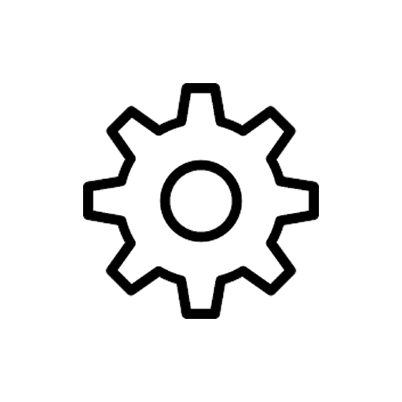

<ion-header [translucent]="true" class="ion-no-border">
  <ion-toolbar>
    <ion-buttons slot="start">
      <ion-button fill="clear" shape="round" routerLink="/home">
        <ion-icon slot="icon-only" name="chevron-back-outline"></ion-icon>
      </ion-button>
    </ion-buttons>
    <ion-title class="ion-text-right">
      <ion-badge color="warning" style="font-size:x-small;text-transform:uppercase;"> Femenil libre </ion-badge><br/>
      <ion-badge color="success" style="font-size:x-small;"> Campo 2 </ion-badge> / <ion-badge color="success" style="font-size:x-small;"> Jornada 6 </ion-badge>
    </ion-title>
  </ion-toolbar>
</ion-header>

<ion-content [fullscreen]="true">

  <div class="btnEstadiFinales" >
    <ion-button expand="block" shape="round" size="small" (click)="estadisticasFinales();">Estadísticas finales</ion-button>
  </div>

</ion-content>

<ion-footer>
  <ion-toolbar>
    <ion-button fill="clear" (click)="goCroconfig()">
      
    </ion-button>

    <ion-button fill="clear" class="btnTochdown_2" (click)="goTowchdown()">
      
    </ion-button>

    <ion-button fill="clear" class="btnCastigo_2" (click)="goCastigos()">
      
    </ion-button>

    <ion-button fill="clear" class="btnIntercepciones_2" (click)="goIntercepciones()">
      
    </ion-button>

    <ion-button fill="clear" class="btnCaptura_2" (click)="goCaptura()">
      
    </ion-button>

  </ion-toolbar>
</ion-footer>

